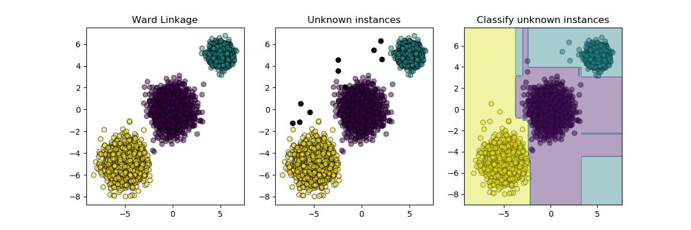

Note
Click here to download the full example code
Inductive Clustering¶
Clustering can be expensive, especially when our dataset contains millions of datapoints. Many clustering algorithms are not inductive and so cannot be directly applied to new data samples without recomputing the clustering, which may be intractable. Instead, we can use clustering to then learn an inductive model with a classifier, which has several benefits:
it allows the clusters to scale and apply to new data
unlike re-fitting the clusters to new samples, it makes sure the labelling procedure is consistent over time
it allows us to use the inferential capabilities of the classifier to describe or explain the clusters
This example illustrates a generic implementation of a meta-estimator which extends clustering by inducing a classifier from the cluster labels.
# Authors: Chirag Nagpal
# Christos Aridas
print(__doc__)
import numpy as np
import matplotlib.pyplot as plt
from sklearn.base import BaseEstimator, clone
from sklearn.cluster import AgglomerativeClustering
from sklearn.datasets import make_blobs
from sklearn.ensemble import RandomForestClassifier
from sklearn.utils.metaestimators import if_delegate_has_method
N_SAMPLES = 5000
RANDOM_STATE = 42
class InductiveClusterer(BaseEstimator):
def __init__(self, clusterer, classifier):
self.clusterer = clusterer
self.classifier = classifier
def fit(self, X, y=None):
self.clusterer_ = clone(self.clusterer)
self.classifier_ = clone(self.classifier)
y = self.clusterer_.fit_predict(X)
self.classifier_.fit(X, y)
return self
@if_delegate_has_method(delegate='classifier_')
def predict(self, X):
return self.classifier_.predict(X)
@if_delegate_has_method(delegate='classifier_')
def decision_function(self, X):
return self.classifier_.decision_function(X)
def plot_scatter(X, color, alpha=0.5):
return plt.scatter(X[:, 0],
X[:, 1],
c=color,
alpha=alpha,
edgecolor='k')
# Generate some training data from clustering
X, y = make_blobs(n_samples=N_SAMPLES,
cluster_std=[1.0, 1.0, 0.5],
centers=[(-5, -5), (0, 0), (5, 5)],
random_state=RANDOM_STATE)
# Train a clustering algorithm on the training data and get the cluster labels
clusterer = AgglomerativeClustering(n_clusters=3)
cluster_labels = clusterer.fit_predict(X)
plt.figure(figsize=(12, 4))
plt.subplot(131)
plot_scatter(X, cluster_labels)
plt.title("Ward Linkage")
# Generate new samples and plot them along with the original dataset
X_new, y_new = make_blobs(n_samples=10,
centers=[(-7, -1), (-2, 4), (3, 6)],
random_state=RANDOM_STATE)
plt.subplot(132)
plot_scatter(X, cluster_labels)
plot_scatter(X_new, 'black', 1)
plt.title("Unknown instances")
# Declare the inductive learning model that it will be used to
# predict cluster membership for unknown instances
classifier = RandomForestClassifier(random_state=RANDOM_STATE)
inductive_learner = InductiveClusterer(clusterer, classifier).fit(X)
probable_clusters = inductive_learner.predict(X_new)
plt.subplot(133)
plot_scatter(X, cluster_labels)
plot_scatter(X_new, probable_clusters)
# Plotting decision regions
x_min, x_max = X[:, 0].min() - 1, X[:, 0].max() + 1
y_min, y_max = X[:, 1].min() - 1, X[:, 1].max() + 1
xx, yy = np.meshgrid(np.arange(x_min, x_max, 0.1),
np.arange(y_min, y_max, 0.1))
Z = inductive_learner.predict(np.c_[xx.ravel(), yy.ravel()])
Z = Z.reshape(xx.shape)
plt.contourf(xx, yy, Z, alpha=0.4)
plt.title("Classify unknown instances")
plt.show()
Total running time of the script: ( 0 minutes 3.541 seconds)